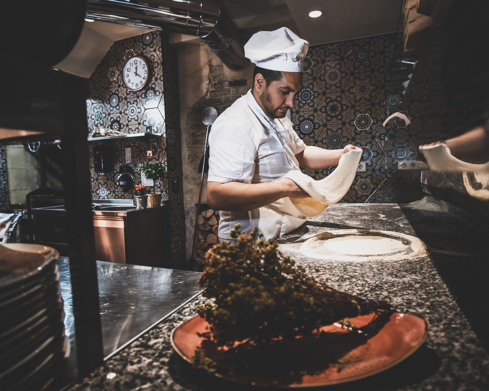
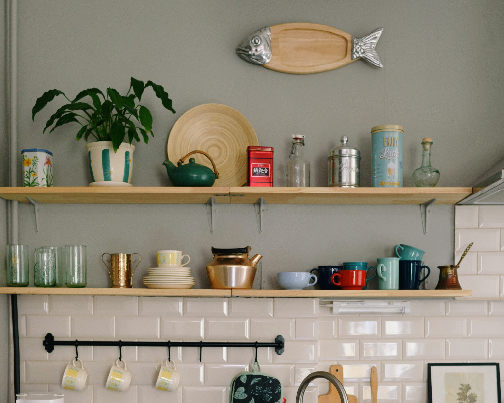

-
Cardápio da Estação
Estamos na primavera, tempo de muitas PANCS como Capuchinha e outras delícias florais. Com isso, temos ótimas experiências de saladas e pizzas. Sugiro também as sobremesas dessa estação, são tantas frutas que estão disponíveis...
Cardápio da PrimaVera
-
Produtos para cozinha
Além de deliciosas receitas, dos nossos livros de culinária, também temos algumas ferramentas essenciais para a sua cozinha. Voais, peneiras, processador, entre outros utensílios super uteis para o dia-a-dia.
Utensílios domésticos
-
Lual e Outros Eventos

Em noites de Lua cheia, e tempo propício, comemoramos na Praia de Peixinhos com um banquete dígno de cada estação. Geralmente temos músicas e outras atrações artísticas nesses eventos. Preste atenção na sua lua cheia ideal.
As Luas da PrimaVera